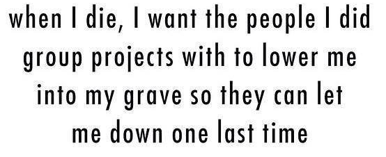

MERN in a Nutshell - Part 2

MERN in a Nutshell - Part 2
| PART 01 | PART 02 | PART 03 |
| PART 04 | PART 05 | PART 06 |
Before starting, there's a killer series on YouTube by the NetNinja that covers a lot of Node basics. Check it out before diving in here!
Also, if you're one of those impatient types or dig the whole self-learning style, the final TeamWhipper project can be found on my github account. Otherwise you can download a barebones template if you want to code along.
So at this point, you may be wondering what this post is all about... Well I decided to make this tutorial as I learned the MERN stack myself. At the end of the day, there are a lot of amazing tools out there but sometimes they make it easy to avoid understanding what's going on under the hood. I love to teach and I've always found that the best way to learn is to help others so I wanted to explain the app building process step by step. It's even better to learn in the context of a project so I tied one of those in too.
We are going to be building a team management application that I call "Team Whipper". The idea behind this came after working on some gnarly group projects during my time at school. I've found myself in situations in the past where it was difficult to set realistic goals while keeping everyone on track and motivated.
This application will primarily be designed with University students in mind and try to ease the interpersonal hell that is the school group project. It will serve as a central hub for setting goals, tracking progress, sticking to roles, and evaluating team member performance throughout the lifespan of a project.
Please note: with all of this in mind, this post will be a continuous work in progress as features are added to the application and it evolves. This is just as much a learning process for me.
MERN stands for MongoDB/Express/React/Node.js and is a slight alternative to the commonly used MEAN stack (which uses Angular instead of React). These four tools are essential when it comes to building any web based application.
The final thing to know before building a web application is the model-view-controller (MVC) design pattern. As the name suggests, it consists of three interconnected parts:
Now that we know some fundamentals, we can start building the app from scratch. Check out part 2 here.